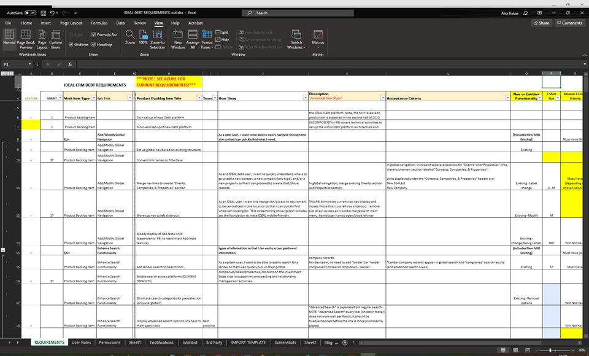
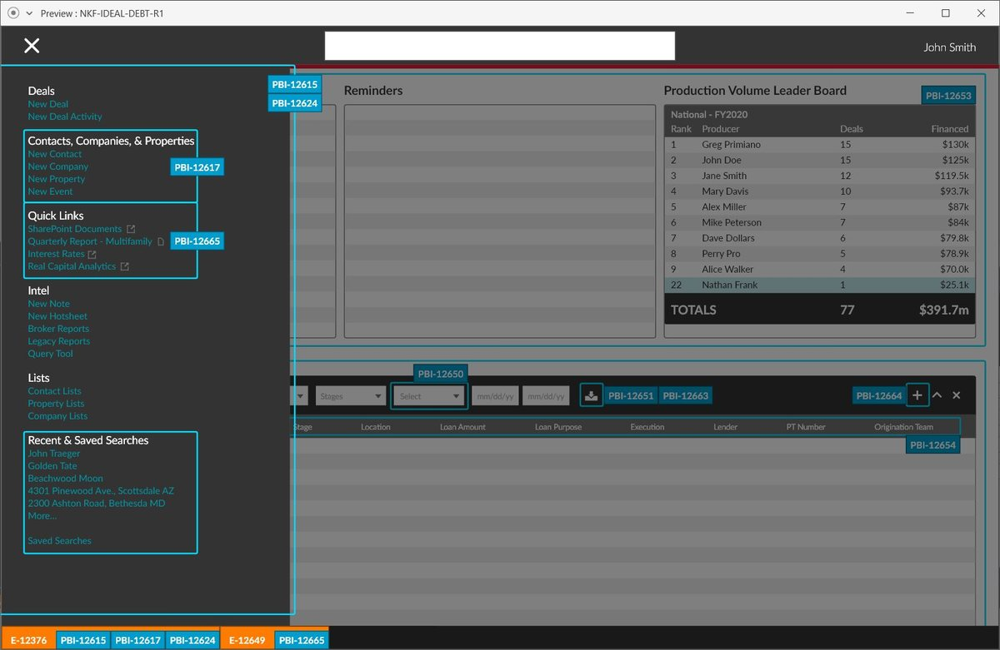
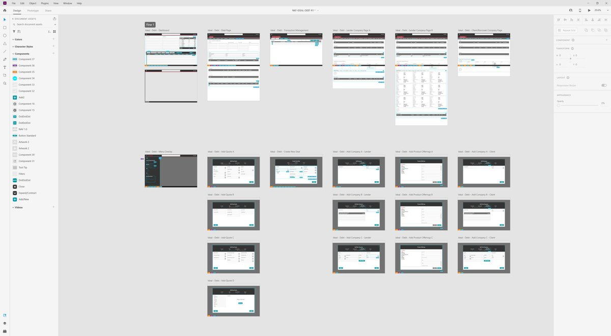

Major CRE Firm
A major commercial real estate firm had just acquired a company specializing in debt transactions and needed that business's workflow inside its custom CRM, which was never built for it. Working with the consultancy Main Digital over five months, I mapped the debt process through interviews with stakeholders and the development team, then turned it into interactive wireframes and a prioritized backlog the team could build from.
Mapping a process with no precedent
Nobody on the platform side had worked with debt transactions before, so the first job was understanding them. I interviewed stakeholders and the existing development team to learn both the business process and what the CRM could already do, and captured every requirement in one working document.

Wireframes tied to the backlog
I designed interactive wireframes inside the client's existing design system and tagged every part of each screen with the backlog item (PBI) that would build it, so developers could trace any requirement straight to its design.


Beyond the scope
An experience audit of the existing CRM surfaced usability problems outside the acquisition work. Those went into the backlog too, giving the client a roadmap for improvements beyond the immediate project.
The client came away with a clear integration plan: a prioritized backlog backed by interactive wireframes, ready for development to build the debt workflow into the existing CRM.